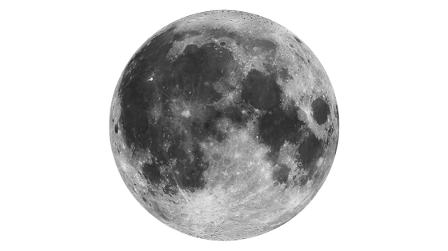

Dificultad de contrarrestar: Difícil
El guardian de la casa que sólo capta movimiento; Recuerda la última criatura que notó, ya sea que se estuviera moviendo o no.
Cuando ven al jugador, abren los ojos e intentan dispararle con su escopeta de dos cañones.
Esperar a que el Cascanueces dispare y luego recargue. Una vez que esté recargado, avanza y comienza a atacar con la pala. La escopeta que lleva puede ser robada mientras aún está vivo, sin embargo, esto causará que persiga a los jugadores.
Después de matar al Cascanueces, dejará caer la escopeta y dos casquillos de escopeta.
| |
 |